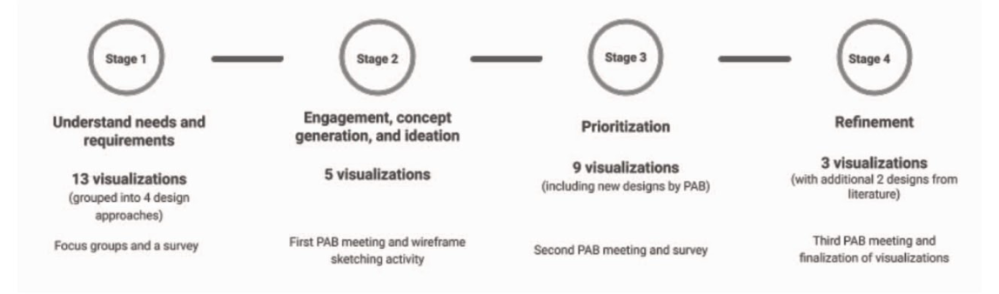
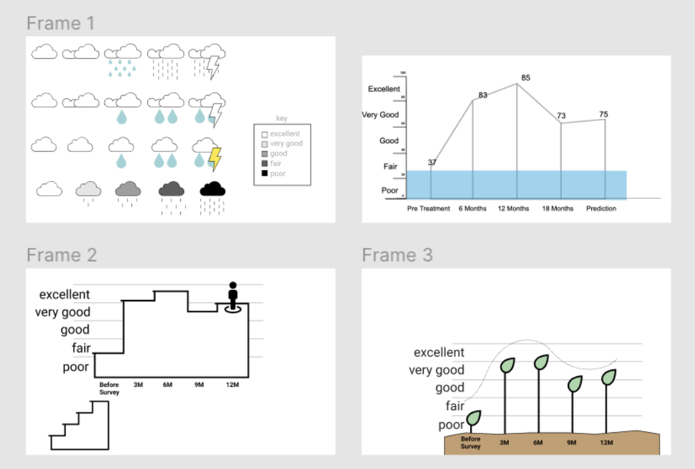
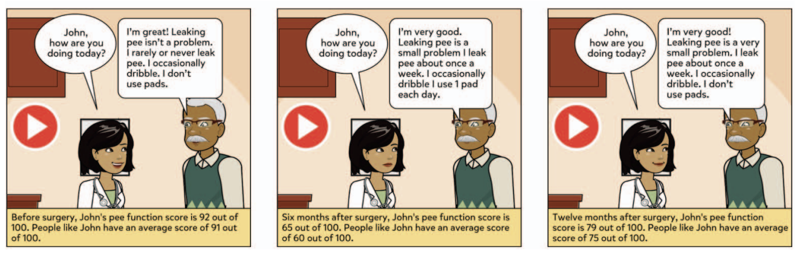

Visualizing data is a common and efficient strategy for patients to track and understand their health. But for patients with limited numeracy and graph literacy, these tools are inaccessible and leave them without alternatives. In this study, we conducted a 4-stage design process to generate considerations for design approaches and reflect the needs of low graph literacy and comprehension.
Background
In the United States, Prostate Cancer (PC) causes the highest rate of new cancer cases and also is the second most deadly cancer to men. This disproportionally affects different demographics; for example, African American men experience nearly double the incidents of both. PC affects quality of life and patient recorded outcomes (PROs). PROs, as opposed to physician-reported outcomes, are self-reported symptoms by the patient which are usually experienced and tracked at home/outside of a provider’s care and offer valuable insight into how their conditions/treatments affect their wellbeing. PROs offer potential to improve and track symptoms, and help inform difficult decisions regarding health, yet many PC survivors report feeling unempowered in sharing information and communicating with their providers. Prior research has investigated PRO tools and visuals for high graph literacy patients, but we are seeking to support low-graph literacy patients. To do so, we carried out a four stage design process to ensure a patient-centered approach to the study.
Stages of design process with objectives, visualizations, and activitiesStage 1. Understanding needs from focus group and survey
In stage 1, we held focus groups with prostate cancer survivors to ask about and understand their needs surrounding PROs. We also garnered feedback on visualizations we created based on previous literature.
Participants reviewed initial designs across four approaches: traditional charts/graphs, metaphors, isotypes, and narrative storytelling visualization. For metaphors, we started with visuals like weather to show patterns. This felt like a promising direction because it is completely separated from numeracy and we could use the different weather extremes to represent severity. I started with a couple of variations, experimenting with ways to represent severity of symptoms. I varied the darkness of the cloud, as well as played with intensities of precipitation. An isotype, which is a term short for ‘International System of Typographic Picture Education,’ is a pictorial representation of information, specifically to represent data. It involves repetition of symbols to communicate quantitative information. For example, we created a water pitcher visual and toilet paper visual to illustrate urinary function scores. Finally, we provided a variety of narrative storytelling examples including animation, audio, and comic depiction. All visualizations across all categories represented the same generated data set of symptom severity scores over 36 months following the Expanded Prostate Cancer Index Composite, a questionnaire created to track patient function and discomfort.
Examples of some initial visualizations presented to focus group:Example of narrative storytelling visual, with comic depiction
Traditional scores ended up with the highest mean (4.1) followed by metaphors, narrative visuals, and isotypes. Some past literature suggests that low literacy patients prefer bar charts, but also that the preference does not correspond to comprehension. Since we did not test for graph literacy, it is unclear if the higher ranking is due to comprehension, or other influencing factors like familiarity and varying literacy levels. Because of this, we decided to pursue the options other than traditional graphs to focus on our objective of creating designs for comprehension with low graph literacy. From the discussions and ratings, we found a reinforced need for color encoding and easy to understand text. From this stage we also got a request for audio narration.